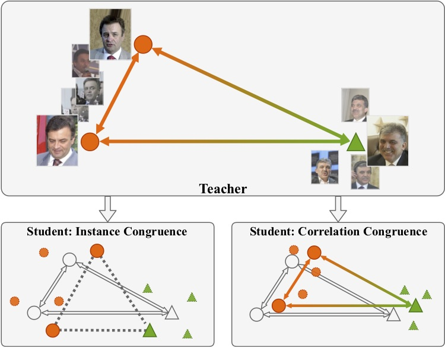
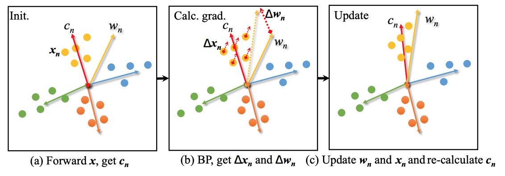

About me
I am a researcher in SenseTime in recent years. I recieved the M.S. degree from the Chinese University of Hong Kong in 2015, under the supervision of professor Kin Hong Wong. Before that, I recieved the B.Eng degree from Chang'an University in 2014. My research is on large-scale face recognition, model compression and video understanding.
News
2 papers with 1 oral presentation got accepted by ICCV2019
Our team won the 3rd place of LFR Challenge in ICCV 2019 workshop
Publications
-

Correlation Congruence for Knowledge Distillation PDF
2019 IEEE International Conference on Computer Vision (ICCV)
Baoyun Peng*, Xiao Jin*, Jiaheng Liu, Shunfeng Zhou, Yichao Wu, Yu Liu, Dongsheng Li, Zhaoning ZhangTransductive Centroid Projection for Semi-supervised Large-scale Recognition PDF
2018 European Conference on Computer Vision (ECCV)
Yu Liu, Guanglu Song, Jing Shao, Xiao Jin, Xiaogang WangHonors & Awards
Lightweight Face Recognition Challenge & Workshop-ICCV 2019 (3rd prize) 2019
Alibaba Tianchi recommendation challenge 1st round (Ranking: 5/7000), 2015
China Undergraduate Mathematical Contest in Modeling (2nd prize), 2012